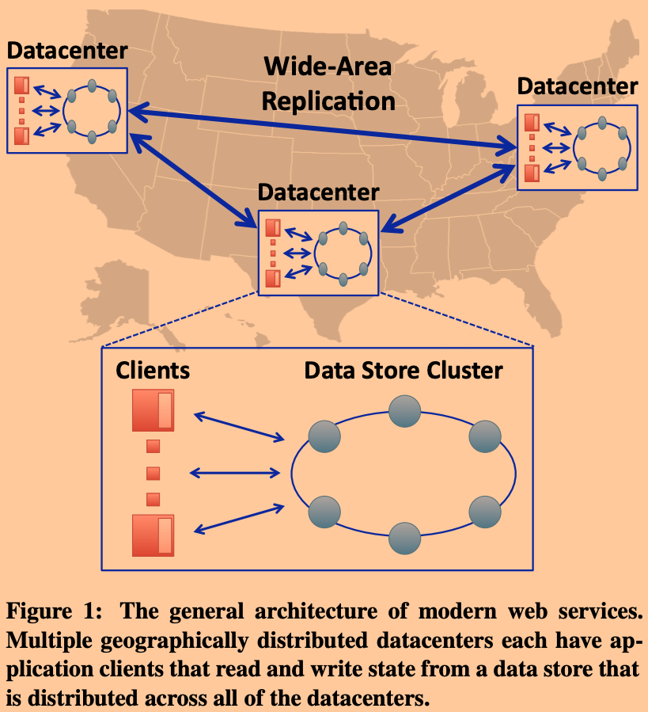

本文是我阅读这篇论文过程中的笔记，以及自己的思考。
简介
目前我读过的论文中涉及远距离多数据中心的存储系统有：
- Spanner
- Facebook Memcache
他们的特点都是读操作可以由任意数据中心所处理（本地读），很快，但是写操作则要集中到某个数据中心处理。像Spanner需要由相应数据所在Paxos group中的leader节点来主持进行写操作，并在其他follower节点之间进行共识复制，而Facebook的系统中则是由Master Region中的master MySQL数据库进行，然后同步到别的Region的slave MySQL中。
那么不由想到，是否能够设计一款，在一致性上略微牺牲一点，但是能够让读写操作可以在任意数据中心被处理的系统（可以做到本地local读写）。这样用户的写操作就不用等待其他数据中心的操作完成，以此提升写操作的性能。
我们可以尝试性的自己设计一下类似的系统。

设计一
假设有三个数据中心，DC1，DC2，DC3，每个数据中心内都分片存储了全量的数据。客户端的读写操作都可以被自己就近的数据中心所处理。每个数据中心会存储自己所处理过的写操作，然后使用类似Lamport Timestamp的机制异步的发送到其他的数据中心。
【因为读操作所涉及的步骤少于写操作，所以这种设定是读操作偏好的。为了适应那些写任务更繁重的场景，可以考虑让写操作只在本数据中心（或超过半数数据中心）处理，但是处理读操作的时候向所有（或者超过半数）数据中心都读一份，然后从读到的所有结果中选出最“新”的数据。】
这种方案是典型的最终一致性实现。虽然这能够有效的提升系统性能，但是对于应用程序员则可能会遇到一些异常现象：
1 | example app code -- a photo manager: |
假设客户端1要向DC1发出请求，在自己的相册中添加了一张照片，那么该操作包含两步：
- 将图片存储。
- 在相册中添加对新增图片的链接。
虽然上面的代码逻辑直觉上看起来应该能够保证：其他用户在看到相册中的新链接的时候一定能够看到新链接对应的图片。但是因为这段代码运行在最终一致性的基础设施之下，这个是不保证的。如果客户端2访问另一个数据中心，试图读取该相册的内容，可能会因为对list的更新先到达，而对photo的插入操作还未到达DC2，而导致客户端2出现只看到链接读不到图片的现象。
这是因为最终一致性仅仅保证：如果系统中没有新的写操作发生时，所有数据中心的数据最终会趋于一致。
这使得对于程序员，他们的工作就变得更加复杂了，因为他们不能通过直观的思考进行编程。如上例所示，程序员在读取相册内容的时候，可能心里就要意识到，图片可能是暂时读不到的，需要一些额外处理，比如加上不断进行重试的额外逻辑。
设计二
在设计一的基础上，显式的提供一个函数sync(key, version)，该函数保证只有在当前数据中心中对于key至少已经同步到version时才会返回。这一定程度上解决了设计一上的问题。
1 | C1: v# = put(photo), sync(photo, v#), put(list) |
这要程序员按照上述方式来实现，那么就不会出现只看到链接看不到图片的现象了。
因为sync的存在会造成一定的阻塞，所以这会一定程度影响写性能。另外，对于程序员而言，他们还是不能直观的进行编程。他们需要考虑到调用顺序，并适时的添加sync。
那么为了减轻程序员的负担，有没有可能允许应用程序员直观的进行编程的同时还能保证本地读写？
一种可能性是：每个数据中心的写操作都会以操作日志的形式存储到该数据中心中一个单独的log服务器上（因为数据是分片存储的），该log服务器会保证按序的依次向其他数据中心进行同步。
这种设计的缺陷就是log服务器在数据量和操作量增大时可能会成为系统瓶颈。
期望
所以我们期望得到的是：
- 应用程序员能够直观编程，无需使用重试或者sync机制来配合底层的基础设施。
- 每个数据中心内的各个数据分片所在的服务器能够自主独立的进行转发写操作，而不是有一个中心化的log服务器。
- 希望在响应用户请求时能够保证足够的一致性。
COPS（Clusters of Order-Preserving Servers）就是这样一个系统。
COPS
COPS向应用程序员仅仅提供了bool, vers=put(key, val)和get(key)=val的接口，对于一致性保证等的复杂逻辑均隐藏于客户端库（SDK）中，对应用程序员透明。
Casual+ Consistency
COPS所遵循的是casual+ consistency（casual consistency with convergent conflict handling）。这是基于casual consistency提出的，casual consistency中提出了操作之间的因果关系。
这种因果关系有如下三条规则进行描述：
- 在单线程的执行过程中，如果a操作先于b操作发生，那么记作a→b。
- 如果a是一个put操作，并且b是一个返回a的put结果的get操作，那么a→b。
- 如果a→b且b→c，那么a→c。

COPS的实现要求，服务器响应用户请求的时候满足操作之间的因果关系（如果存在的话）。以上图为例：
- 从应用程序员的角度看：如果一个客户端C3读到了x为4，那么系统就一定要保证这个get(x)=4的“因”们都已经发生，即在未来读取y的时候，服务器返回的值的版本至少为上图中C1写的2的那个版本。
- 从COPS实现人员的角度来看：如果收到客户端的一个写操作，必须一直缓存着等到该写操作对应全部的“因”都已经被持久化时才能执行。
但是casual consistency并不限制那些没有因果关系的操作之间的执行顺序关系，可以并发执行，这也是casual consistency能够取得比strong consistency更高性能的一个原因。
但是特殊的，对于那些对于同一个key的没有因果关系的写操作（conflict opertions）如果放任并发执行的话，转发数据的过程中可能产生不确定性（non-deterministic）：比如没有因果关系的put(x, 1)和put(x, 2)操作，如果不加解决，在转发过程中可能有的数据中心的x为1，有的为2，这就产生了数据分叉，且这种分叉会越来越多。所以需要提供进行收敛的冲突处理规则。为了保证收敛，需要冲突处理规则具备交换律和结合律。这就是casual+ consistency。
COPS默认使用的冲突处理逻辑为“last-write-wins”，具体实现就是使用Lamport timestamp在拼接上各个节点的唯一ID来作为更新操作的version以此进行全局定序。这样在节点收到conflict opertions时，就能简单的忽略version更小的操作，接收version更大的操作，来保证最终一致性。
如何判断某个操作是否是conflict opertion呢？
因为每次写操作的时候都会带上数据的老版本号prev，假设目前COPS内存储的最新数据位curr的话，如果出现一个写操作的prev ≠ curr的话，那么该操作就是一个conflict opertion。
COPS的系统设计

接下来根据上图从左向右简要介绍各个组件。
Client & Client Library
COPS Client Library向Client暴露的接口有：
ctx_id ← createContext()bool ← deleteContext(ctx_id)bool ← put (key, value, ctx_id)value ← get (key, ctx_id)
下面是之前提到的相册样例使用COPS Client Library来实现的伪代码：
1 | # Alice’s Photo Upload |
可以看到，和一般的put和get接口不同，COPS要求接口中额外在传递一个context变量。
COPS的Client Library会在用户使用过程中在context中记录下操作之间的因果关系，然后在发送修改操作的时候一并带上。
Data Store
COPS是一个在少量数据中心上运行的key-value存储系统，数据的存储格式为<key, value, version>，其中version为该数据的最新version。
每个数据中心中都有一个local COPS集群，该集群中通过一致性哈希将全量的数据进行分片存储。为了容错性，每个分片的数据还会各自通过chain replication进行冗余备份。
在每个local COPS集群中，客户端发起的操作是遵循linearizability的。只有在接收到其他集群中异步转发的数据时才会按照casual+ consistency的规则来执行。
当COPS Data Store执行来自Client的写请求后，会将该写操作以及该写操作所依赖的操作信息放入一个replication queue中，等待异步转发给其他的集群。
而当COPS Data Store收到来自其他集群转发的写请求后，会先进行依赖检查，只有确保所有的依赖条件都已满足后，才会真正更新对应的数据，暴露给用户。
COPS中的读操作
COPS的读操作是完全由local集群处理的，不会涉及跨集群通信。客户端的get请求本质是使用如下接口实现的：
(value, version, deps) ← get_by_version (key, version=LATEST)
在COPS中version永远为lastest，即COPS的处理逻辑就是直接将其存储的最新数据返回给客户端，没有任何额外的判断逻辑。
该接口返回了三个值，deps为该key的全量依赖，这里暂时不需要。
假设目前客户端逻辑为如下（这里为了清晰省去了context的创建和使用）：
1 | get(X) |
第一句get(X)，假设这句代码X返回的version为v2，那么就是
(value, v2, _) ← get_by_version(X, version=LATEST)
在调用返回后，Client Library会在context中记录下以下信息，为未来的写操作准备依赖关系：
<X, v2>
同样的，假设第二句代码get(Y)返回的version为v4，那么此时context就变成这样：
<X, v2><Y, v4>
COPS中的写操作
基于上面的读操作介绍，这里会结合例子给出COPS处理写操作的具体流程。
假设目前客户端逻辑为如下（这里为了清晰省去了context的创建和使用）：
1 | get(X) |
前面读操作讲解略。
最后一句put(Z, 111)为一个写操作，实际上Client Library是通过下面这个接口实现的：
(bool, vers) ← put_after (key, val, [deps], nearest, vers=nil)
本处理COPS Client请求时，该接口参数中需要使用到的有：
- key：本例中应该设置为Z
- val：本例中应该设置为111
- nearest：该数据的最近的依赖关系。本例中应该设置为
[<X, v2>, <Y, v4>]。
接口会返回一个布尔值代表操作是否成功，如果成功那么第二个返回值为数据的版本号，假设这里返回v3，即
(true, v3) ← put_after (Z, 111, [deps], [<X, v2>, <Y, v4>], vers=nil)
而在COPS收到put_after请求之后：
先为Z创建一个新的版本号，创建的规则就是之前说的Lamport timestamp+id。这里假设为v3。
将
<Z, 111, v3>进行存储，如果之前已经有关于Z的数据了，那么会覆盖。接下来是向其他集群转发请求，这也是通过
put_after来实现的。故下一步为向其他所有集群发送RPC，put_after (Z, 111, [deps], [<X, v2>, <Y, v4>], vers=v3)在其他COPS集群收到转发的写操作后，会先缓存该操作，并提取出操作中的依赖
[<X, v2>, <Y, v4>]，然后不断联系存储本集群内X和Y的分片服务器检查依赖关系是否已经满足，使用的是如下接口：bool ← dep_check (key, version)，实现处理逻辑很简单也就是比较实际存储的key对应的version是否大于参数中的指定的version，在本例中即为：bool ← dep_check (X, v2)和bool ← dep_check (Y, v4)当以上两个请求都成功返回之后，此COPS集群才会真正的执行对应的操作，并响应最初的集群。
当所有集群都响应执行成功后，该集群才会响应客户端的
put(Z, 111)。当
put(Z, 111)返回后，客户端还要更新context，经过优化后处理的逻辑为：直接将整个context抹除后替换为<Z, v3>。之所以可以这么做是因为：put(Z, 111)后未来的所有操作都依赖<Z, v3>，当然还有<Z, v3>的依赖们，但是因为<Z, v3>是已经确定在所有集群中都已经存储了的，所以<Z, v3>的依赖们也一定存储了，再次声明是多余的，故可以安全的删掉context中之前的全部依赖关系。
根据上面COPS写操作的流程可以看到有潜在的的问题：
目前每次读操作之后context都会将返回的key, value，这样进行了大量读操作之后，context会越来越大，这也会导致写操作时发送的依赖关系也很多，会导致更多的dep_check任务。
那么，客户端context是否有必要存储数据全量的依赖呢？

假设客户端存储的是全部依赖。这上图就是一个典型的COPS-GT的context中维护的全量依赖图。
但是根据分析不难发现，对于Z4，其全量依赖关系有<t2, u1, v6, w1, x3, y1>，这些依赖关系中还存在子依赖关系，比如y1的依赖为x3和w1等。
这时就要问，此时x3和w1还有存在的必要吗？根据传递性，只要y1已经被本地集群（local cluster）成功的存储，那么其实COPS-GT的存储机制就已经保证了y1的依赖<x3, w1>已经存储了。所以y1即可代表x3和w1。
同理，u1也可以去掉。可能需要纠结一下的是t2，虽然t2是Z4的直接依赖，但是因为其可以被v6所代表，所以可以分析出z4真正需要存储依赖信息只有<y1, v6>。
所以经过此优化后的context中只需要存储精简后的“最近”依赖即可，也就是上图表格中的第二列。那些不需要的依赖可以通过垃圾回收清理掉。
COPS-GT
COPS无法仅仅通过get来实现同时读多个key的读事务。
比如考虑下面的例子，C1在将其相册权限修改为private之后，在相册中添加了一些隐私照片，同时另一个用户C2在读取相册信息：
1 | C1: v1 <- get(ACL) // originally public |
可以看到，如果没有读事务的话，这里C1就能够在C2修改了访问权限为private之后还能够查看到其新增后的相册内容。
出现这种现象的本质原因是C1读取到的album数据的依赖，ACL的版本应该是v2，但是C1之前读到的ACL只是v1。
和COPS的系统设计中的不同处
Client & Client Library
首先就是Client Library中多了一个接口：
(values) ← get_trans (<keys>, ctx_id)
该接口是用来提供读事务功能解决上面提到的相册和ACL之间不一致访问的问题的。
Data Store
在COPS-GT中，系统不仅会存储最新的key和value，还会存储一系列的历史版本，格式为：
<key, [<version, value, deps>, <version, value, deps>, ... ]>
而其中deps的格式为<key, version>。
这使得get_by_version能够读取历史数据，使得实现get_tran成为可能。
COPS-GT的get_tran
我们先来分析一下之前的那个相册例子中，导致不一致的原因。
1 | C1: v1 <- get(ACL) // originally public |
可以看到不一致的原因就在于，最后C1应该使用v2的ACL来对v2的album进行权限判断，但是这里却使用了过期的v1。这才造成了即使C2修改了ACL但是C1还是有可能能够看到其隐私相册。
为了解决这个问题，需要保证访问ACL和album是在一个读事务中完成：类似get_trans(ACL, album)。而get_trans需要返回的数据能够保证参数中的key对应数据
之所以之前的相册权限和内容访问不一致就是因为读取almu，COPS-GT的get_tran需要保证：如果传入参数中的key之间有依赖关系的话，返回的数据需要保证能够满足这些依赖关系。
例子中，因为<album, v2>依赖于<ACL, v2>，所以get_trans(ACL, album)就不能返回[<album, v2>, <ACL, v1>]给用户。因为这会造成不一致。

上图就是get_tran的实现伪代码：
- 第一步：并发的向COPS-GT读取参数中key对应的最新value。
- 第二步：根据第一步的返回值分析出，为满足key之间的依赖关系，各个key所应该具备的版本号。通俗的说，就是找到参数中keys所有的依赖关系，以依赖链的最低端为准，来决定依赖链上端的key的版本号。
- 第三步：根据第二步的分析结果，去重新获取那些在第一步中版本不符合的key。因为这些都是基于已有的数据分析出来的所需依赖关系，所以这些第三步中要获取的数据在本地集群中也一定存储了，可以直接返回。
垃圾回收
因为COPS-GT中的还需要存储大量历史版本信息，所以可能会消耗很多存储空间，如果不加以限制，存储空间会无限增长。
version GC
因为访问旧版本数据只可能是因为并发的写操作导致，所以COPS-GT要求Client执行get_tran最多只能执行5秒，超时后将会重新发起一次get_tran。这使得在COPS-GT在有新版本数据写入时，只需要存储（5+delta）秒的旧版本数据（delta是为了时钟偏移考虑），超时后旧版本数据就可以被清理掉。
Dependency GC
对于存储的依赖数据，假设有x，y，z，其中z2依赖于x2和y2，那么只要当z2写入成功后的5秒钟之后，就能保证所有的其他读事务都只可能返回x2和y2了，所以此时z2的依赖信息就可以被清理掉了。
缺陷
- 需要保证单个用户的操作都被同一个context所记录，故可能在多web服务器的时候，负载均衡器需要保证将用户请求一直转发到同一个web服务器，然后web服务器上也要做好不同用户context的隔离工作。
- 没有提供写事务（据说后序的论文有改进）。
- 分片服务器之间的依赖检查、客户端和服务器上存储的额外依赖信息都可能造成消耗。
- 可能因为一个key的提交失败，导致后序的整个依赖链都缓存着等待。